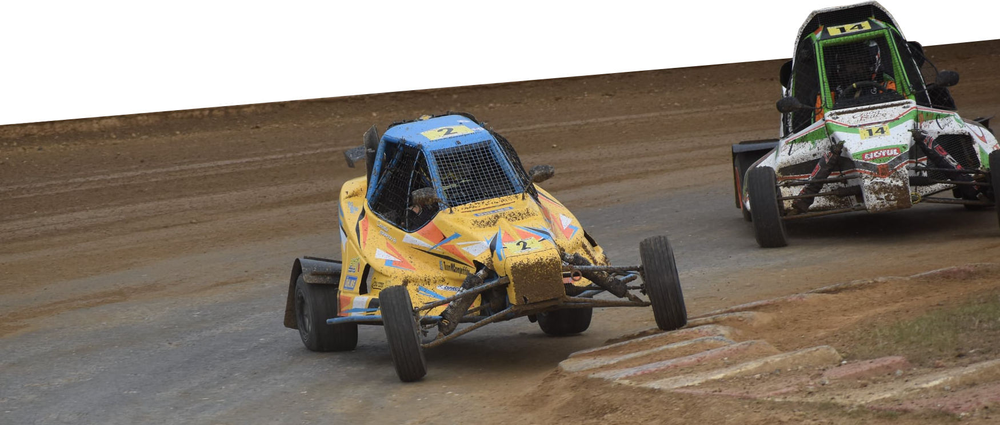

Qui sommes-nous ?
MC-Compétition est une association loi 1901 soutenant Corentin MARTIN, pilote en Coupe de France de Sprint Car
- 1994 : Naissance à Domfront (61)
- 2009 : Débuts en compétitions à 15 ans
- 2011 : Vice-Champion de Normandie [Junior Sprint Sprint]
- 2014 : 3ème de la Coupe de France et Vice-Champion de l'Ouest [Junior Sprint]
- 2019 : Vice-Champion de France Maxi [Maxi Sprint]
- 2021 : 3ème de la Coupe de France [Maxi Sprint]

Que faisons-nous ?
Avant d’entrer dans des détails techniques, voici un bref aperçu de ce qu’est l’Autocros/Sprint Car : Imaginez 15 véhicules ensemble sur une même grille de départ, prêts à bondir de leur emplacement dès l’allumage du feu vert avant d’entamer une lutte intense durant 5 tours sur un circuit en terre d’un kilomètre de long. Plaisant n’est-ce pas ? Bienvenue dans notre univers !
Les compétitions sont organisées sous l’égide de la Fédération Française du Sport Automobile (FFSA) avec l’appui de l’Organisation Française de l’Autocross et du Sprint Car (OFAC) et les règles de sécurité sont édictées par la Fédération Internationale de l’Automobile (FIA).
9 catégories différentes sont sur les circuits chaque week-end : 5 en Autocross (Des voitures de tourisme aux buggys 4 roues motrices) et 4 en Sprint Car (Junior Sprint pour les 12/18 ans, Sprint Girls catégorie 100% féminine, Maxi Sprint et Super Sprint).
Notre catégorie est la Maxi Sprint : un Sprint Car de 315 kgs propulsé par un moteur Kawasaki ER6N de 95 chevaux (soit un rapport poids/puissance équivalent à une voiture de 300 chevaux pour 1000 kgs). Chaque week-end, 26 pilotes sont engagés dans cette catégorie.
